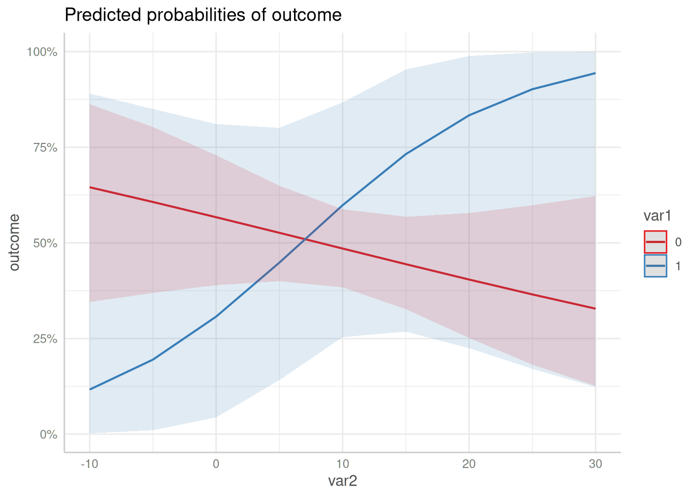

Technical Details: Different Output between Stata and ggeffects
Source:vignettes/technical_stata.Rmd
technical_stata.RmdWhy is the output from Stata different from the output from ggeffect?
Stata’s equivalent to the adjusted predictions produced by
ggeffects is the margins-command. However, the
results are not always identical. For models from non-gaussian families,
point estimates for the adjusted predictions are identical, but the
confidence intervals differ.
Here is an explanation, why there is a difference. First, we fit a logistic regression model.
set.seed(5)
data <- data.frame(
outcome = rbinom(100, 1, 0.5),
var1 = rbinom(100, 1, 0.1),
var2 = rnorm(100, 10, 7)
)
m <- glm(
outcome ~ var1 * var2,
data = data,
family = binomial(link = "logit")
)Example with graphical output
The Stata plot
This is the code in Stata to produce an adjusted predictions plot.
use data.dta, clear
quietly logit outcome c.var1##c.var2
quietly margins, at(var2 = (-8(0.5)28) var1 = (0 1))
marginsplotThe resulting image looks like this.

The ggeffects plot
When we use ggeffects, the plot slighlty differs.
library(ggeffects)
predict_response(m, c("var2", "var1")) |> plot()
As we can see, the confidence intervals in the Stata plot are outside
the plausible range of [0, 1], which means that the
predicted uncertainty from the Stata output has a probability higher
than 1 and lower than 0, while predict_response() computes
confidence intervals within the possible range.
Conclusion
It seems like Stata returns inaccurate confidence intervals.
Predictions and standard errors returned in Stata are on the
(transformed) response scale. Obviously, the confidence intervals are
then computed by estimate +/- 1.96 * standard error, which
may lead to confidence intervals that are out of reasonable bounds
(e.g. above 1 or below 0 for predicted probabilities).
The transformed estimate (on the response scale) is always between 0 and 1, and the same is true for the transformed standard errors. However, adding or subtracting approx. 2 * transformed SE to the transformed estimate does no longer ensure that the confidence intervals are within the correct range.
The precise way to do the calculation is to calculate estimates, standard errors and confidence intervals on the (untransformed) scale of the linear predictor and then back-transform.